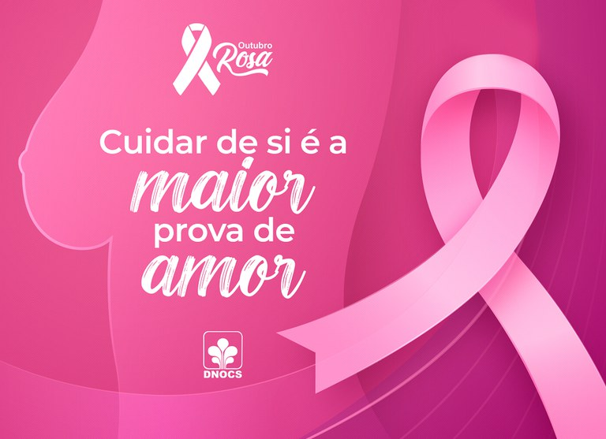

Outubro Rosa é um movimento internacional de conscientização para o controle do câncer de mama, criado no início da década de 1990 pela Fundação Susan G. Komen for the Cure. A data, celebrada anualmente, tem o objetivo de compartilhar informações e promover a conscientização sobre a doença; proporcionar maior acesso aos serviços de diagnóstico e de tratamento e contribuir para a redução da mortalidade. Desde 2020, com a pandemia COVID-19, os grupos que atuam em câncer de mama tiveram que repensar suas campanhas do Outubro Rosa e aumentar sua presença virtual. Por meio de intervenções, campanhas e mensagens inovadoras, eles mostraram que a promoção da saúde pública pode assumir várias formas e gerar um forte impacto no acesso à saúde. Qual a melhor forma de adaptar uma campanha? Por que a parceria com outros grupos pode aumentar o alcance das mensagens compartilhadas? Como avaliar o impacto de uma campanha virtual? Para tentar responder essas questões, em 21/9/2021, a Union for International Cancer Control (UICC) compartilhou estudos de caso de diferentes grupos e regiões para inspirar ideias e compartilhar lições aprendidas nas campanhas de 2020 para aproveitar ao máximo a campanha do Mês de Conscientização do Câncer de Mama deste ano.
“Essa mobilização coloca nós, mulheres, em primeiro plano, respeitando as nossas individualidades e valorizando o ato de observar o próprio corpo. O mês Outubro Rosa vai além da cor rosa, agregando como cores a diversidade dos tons de pele das mulheres brasileiras”, defende a ministra da Saúde, Nísia Trindade, reforçando que a campanha deste ano busca estimular a conexão das mulheres com a saúde, de forma que a prevenção e o diagnóstico precoce sejam algo contínuo em suas vidas e não apenas no mês de outubro. Segundo Instituto Nacional do Câncer (INCA), o câncer de mama é o tipo de câncer mais frequente em mulheres, após o câncer de pele. Para o Brasil, foram estimados 73,6 mil novos casos em 2024, com um risco de 66,54 casos a cada 100 mil mulheres. É relativamente raro antes dos 35 anos, mas acima desta idade a incidência cresce progressivamente, especialmente após os 50 anos. O Ministério da Saúde afirma que cerca de 17% dos casos podem ser evitados por meio de hábitos de vida saudáveis. O câncer do colo do útero, por sua vez, é o segundo tipo mais comum entre as mulheres no mundo, depois do câncer de mama, e a principal causa de morte por câncer entre mulheres em muitos países. No Brasil, é o terceiro tumor mais incidente na população feminina com 17 mil novos casos por ano no triênio 2023-2025, correspondendo a uma taxa de incidência de 15,38 casos a cada 100 mil mulheres. Para a ministra Nísia Trindade, é preciso que a mulher conheça seu corpo para conseguir identificar quando algo não está certo e buscar atendimento. “É fundamental mantermos o nosso acompanhamento de saúde em dia. Essa é a melhor maneira de prevenir o câncer e outras enfermidade”, afirma.